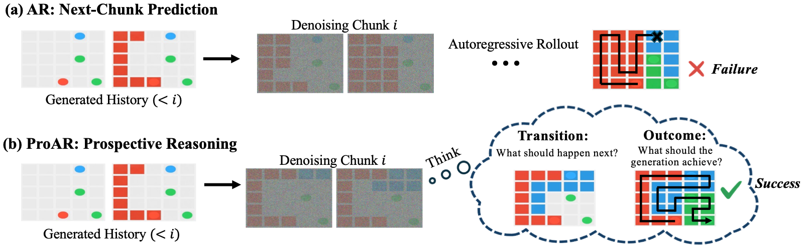
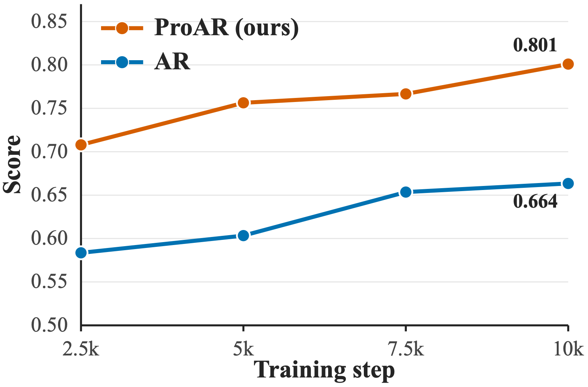

Goal completion
The final state must satisfy the task objective.
The right destination01 / The idea
Video-native reasoning solves tasks by directly generating a sequence of visual states, with applications in physical reasoning and embodied intelligence.
Two requirements for reasoning
The final state must satisfy the task objective.
The right destinationIntermediate transitions must follow task logic or physical constraints.
Valid steps along the wayStandard autoregressive models react to past history through next-chunk prediction.
Locally plausible predictions therefore do not ensure goal completion or valid progression.

02 / The method
Prospective reasoning anticipates future outcomes and state transitions from observed history and uses these expectations to guide current generation.
ProAR introduces two complementary mechanisms: outcome guidance and transition guidance.

Outcome guidance
“What should the generation achieve?”
ProAR jointly predicts the current chunk and an evolving goal frame. Asymmetric attention lets the goal belief guide current generation while shielding it from the noisy current chunk.
Transition guidance
“What should happen next?”
Leveraging teacher forcing in AR training, ProAR extracts clean next-chunk representations in a single forward pass—without an external representation encoder or an additional backbone pass.
A lightweight predictor aligns current hidden states with these
future targets, encouraging them to anticipate upcoming temporal dynamics.
Late-start alignment. Transition guidance is activated after an initial training warm-up, once the backbone has learned task-relevant representations.
At inference ProAR predicts its own goal belief without ground-truth future frames; the alignment predictor is removed.
Overall inference time increases by only about 10% over standard AR.
03 / Results in action
From perceptual, spatial, and abstract reasoning tasks to embodied simulation.
04 / Training efficiency

ProAR surpasses the fully trained AR baseline after only 2,500 training steps on the VBVR 10-task subset.
A further gain from transition guidance
After Transition guidance is activated at 7,500 steps, the mean score rises from 0.7666 to 0.8010 by step 10,000.
05 / Citation
If you find this work useful, please consider citing it.
@misc{shen_proar,
title = {ProAR: Learning Prospective Reasoning with
Autoregressive Video Models},
author = {Shen, Linghui and Zhu, Tinghui and
Zhang, Sheng and Chen, Muhao}
}Publication details will be updated with the public release.